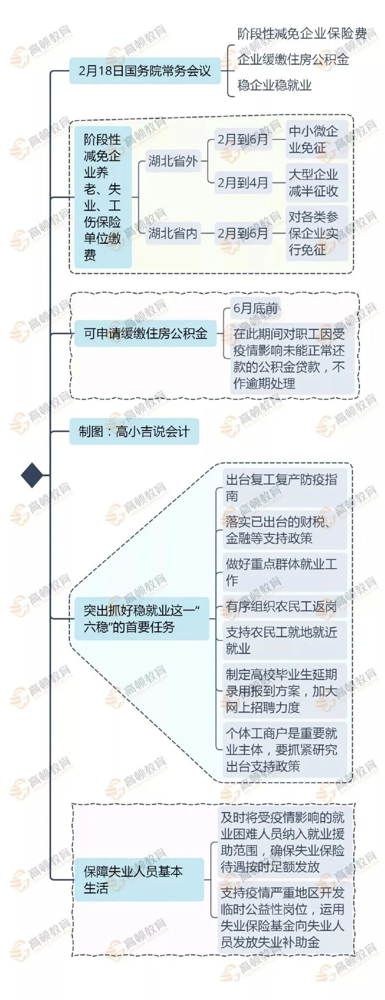
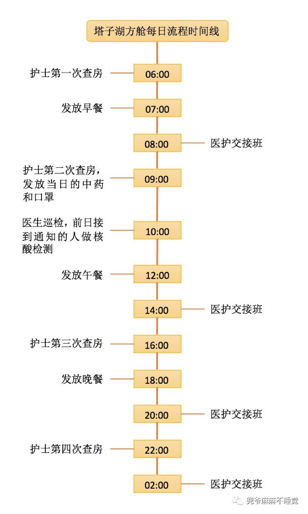

肺炎日记|2月19日：拉网大排查下遗漏的1%
原文链接 备份链接 【财新网】（记者 黄蕙昭 综合）距离1月20日晚钟南山院士宣布病毒“肯定人传人”已近一月，湖北内外氛围有别：疫情核心区武汉，新冠疫情仍处于胶着对垒状态，从2月16日起，武汉市启动三天拉网式大排查，誓将底数摸清，把握疫情 …
岛语

非常时期，武汉成了全国人民挂念、祈福的城市。封城后，武汉人民的真实生活是什么样？ 武汉在发生哪些变化？
正和岛自1月26日起特别推出“叶青专栏”。叶青是一位定居武汉40年的市民，也是一名学者和官员。在过往多期的专栏文章里，叶青实时记录了很多观察和亲历的事件，并提了很多建设性的建议，深受读者好评。
这将是一份宝贵的史料。感谢他，我们得以更真切地感知到武汉疫情全方面的进展。让我们一起为武汉加油！
*作者 | 叶青 正和岛蓝色岛邻*
排版 | 张珍珍 正和岛湖北岛丁
来源 | 正和岛APP
01
确诊病例存量正在消化
21日，正月二十八。周六。晴。一周又过去了。
21日，全国新增确诊病例397例，新增死亡病例109例（湖北106例）。
截至21日，全国现有确诊病例53284例（其中重症病例11477例），累计治愈出院病例20659例，累计死亡病例2345例，累计报告确诊病例76288例，现有疑似病例5365例。
湖北新增确诊病例366例（武汉314例），新增治愈出院病例1767例（武汉992例），新增死亡病例106例（武汉90例），现有确诊病例47647例（武汉36680例），其中重症病例10892例（武汉9555例）。
累计死亡病例2250例（武汉1774例），累计确诊病例63454例（武汉45660例）。新增疑似病例1125例（武汉927例），现有疑似病例4490例（武汉3414例）。
湖北省将19日核减的病例数重新加回到确诊病例，并对当日新增病例数进行校正。据此，2月19日，全国新增确诊病例订正为820例，全国累计确诊病例订正为75002例，全国累计出院病例订正为16157例。20日，全国累计确诊病例订正为75891例，全国累计出院病例订正为18266例。
02
这两天数据有点乱
20日7点，湖北省卫健委公布的新增确诊病例349例（其中：武汉新增615例，仙桃等4市新增13例，荆门、咸宁等10市州核减279例）。
虽然下降的很厉害（这一数据16日为1933例、17日1807例、18日1693例）。但是，大家没有看懂。
网民一阵不安：266人去哪儿了？
在我的微信上，传来了阵阵质疑声。
@江南0574：叶局长：您是搞统计的。湖北这种数据统计游戏要不得，今日确诊数不能减去过去确诊后被排减数，不然会出现这样情况：过去确诊数因多种原因高报较大，而今后确诊数每天有且较为严重，但一直被冲抵，当日数为零，一直结转，一直为零，直到结转数为零。核减的应在现有确诊数中核减，不能从当日新增中核减。
我在统计局正好分管社科统计，连国家统计局有关司都过问。
现在发现，这些网民想法，居然与新省委书记一致。
好在上午10点40，湖北省卫健委的回应来了。
原因是国家卫健委18日下发了《关于印发新型冠状病毒肺炎诊疗方案（试行第六版）的通知》，相对诊疗方案（试行第五版），湖北省特有的临床诊断病例类目取消，仅保留确诊和疑似病例。
于是乎，武汉的人数不变，其他市州的人数减少了，全省的数字就减少了。
这个说明虽然晚了近4个小时，还是让大家了解到真实情况。以后确实要多说几句。
一波未平一波又起。
21日7点多，湖北省卫健委发布消息：20日，全省新增新冠肺炎确诊病例411例，其中：武汉市319例。
新增病例比昨天增加了一点。但是，“不幸的”消息在中午12点多传来，湖北新增确诊病例631例（武汉319例）。
一个多小时之后，湖北省卫健委又做出解释：我省监狱没有接入传染病疫情网络报告系统，2月20日夜接到监狱部门手工报卡后，经认真审核确认，截至2月20日24时，监狱部门报告的271例新冠肺炎确诊病例中有 51例前期已纳入相关地区统计并公布，其余220例确诊病例和10例疑似病例现纳入2月20日疫情数据进行公布。
湖北省监狱系统确诊病例271例，其中武汉女子监狱确诊230例，湖北省沙洋汉津监狱确诊41例，均为输入型病例。
全国监狱确诊病例已超400例。处理监狱长等人是不用说的了。
21日下午四点举行的湖北疫情防控新闻发布会上，湖北省卫健委副主任涂远超说，这些天湖北省特别是武汉市发布的新冠肺炎数据的调整，引起了社会高度关注。对此，省委书记应勇同志高度重视，明确要求对已确诊的病例不允许核减，已核减的必须全部加回，对相关责任人要查清事实，严肃问责。
这就是说，要按照第五版的要求保留确诊病例，而不是简单地按照第六版的标准订正为其他疾病或归类为疑似病例。这样的话，可能又有新的隐患。书记的担心是对。本着为人民负责的态度，把问题考虑的重一点，宁信其有，也是一种比较保险的做法。武汉、湖北再也经不起松懈了。
21日23:23环球网报道，湖北宣布将2月19日核减数据加回确诊病例，新增确诊由349例订正为775例。
这就叫有错必改，有错快改，改了轻松。
03
取得阶段性成效
中共中央政治局21日召开会议，研究新冠肺炎疫情防控工作，部署统筹做好疫情防控和经济社会发展工作。
会议强调，目前疫情蔓延势头得到初步遏制，防控工作取得阶段性成效。同时，要清醒地看到，全国疫情发展拐点尚未到来，湖北省和武汉市防控形势依然严峻复杂。
有“成效”也是阶段性的，关键是大家取代的拐点尚未到来。这个宝贵的观点，希望能够在2月下旬的后半段出现。
疫情防控和经济社会发展应该比重。
总的情况如何？有关数据可以反映。
中企联表态：中国制造业500强企业复工复产率达97%，产能利用率近60%。已复工复产企业中，员工到岗率平均66.17%，成员企业开工率平均75.24%，产能利用率平均58.98%。
国有企业复工复产状况总体好于民营企业。
因此，可以复产的地方尽快克服困难复产，这是对抗疫的最大的支持。
最近，有关部门出台了不少优惠政策，梳理一下是必要的。

04
要打一个又一个的攻坚战
21日，湖北省委书记应勇主持召开疫情防控视频调度会。
应勇再次强调：疫情防控步入有序轨道，疫情形势仍十分严峻：
•患者存量基数还很大，救治任务十分艰巨
•筛查甄别和流调工作存在薄弱环节
•隐性感染者底数还未摸清
•向好的基础还不稳固。
应勇强调了“六个要”：
•要紧紧围绕救治和阻隔两大关键环节，争分夺秒开展大排查，实现甄别“加速度”、收治全覆盖，救治早介入，发热病人严管理，真正实现应隔尽隔、应收尽收、应检尽检、应治尽治；
•要抓牢兄弟省市对口支援湖北的重要窗口期，坚决把流调隔离工作做实做细，推动形成数据信息闭环和收治工作闭环，确保底数摸清、人员搞准、数据真实，确保密切接触者及时隔离，防止隐性感染者成为流动传染源；
•要创造条件将现有隔离点转为隔离治疗中心，配备医务力量、赋予治疗功能，有条件的可直接改成医院，真正把救治关口前移；
•要做实“筛查甄别—转送救治—康复出院”工作闭环，帮助出院者顺利度过康复隔离期；
•要坚持重症救治和轻症干预并重，最大限度减少轻症转成重症；
•要统筹兼顾好新冠肺炎治疗和社会日常急需医疗服务，防止顾此失彼。
把大家关心的问题，呼吁的问题，做了很好的恢复。思路是清晰的。
自疫情暴发以来，武汉或有上万个家庭正在遭受新冠肺炎次生灾害的痛楚。他们是需要化疗的癌症患者，是需要透析的尿毒症患者，是急需手术的突发心梗病人……无法保障即时治疗，对他们而言也意味着死亡的威胁，甚至比新冠肺炎来得更快。
2月16日，武汉市卫健委公布了非新冠肺炎患者部分接诊医院，以满足慢性重症患者、孕产妇、儿童、血液透析患者的医疗需求。
但是，还是有一些非新冠肺炎患者在等待中失去了生命。据《潇湘晨报》1月31日报道，武汉市武昌医院护士章芹的父亲因无法维持透析去世。“父亲，我在救别人，对于你我毫无办法，一路走好，我好爱你，爸爸。”这是章芹对父亲最后的告白。
2月17日下午，汉口的一家定点药房外，还排着长队，数百位癌症、糖尿病患者等待取药。在志愿者组织的求助群里，白血病等非新冠肺炎患者的求助信息一条接着一条。
这种感觉，有点像最早的疫情的10天中，有病无床位的无奈的感觉。
新书记强调了这一点，至关重要。
05
核酸检测存量清零
国务院联防联控机制21日上午召开的新闻发布会，还是传来一些好消息。
比如，四下降、一增加，部分省份零报告。
预计疫苗最快将于4月下旬左右申报临床试验。再熬两个月。
现在五条技术路线同步加快推进疫苗研发，目前，有部分项目已经进入动物试验阶段。
在药物和临床救治方面，中医药在阻断轻型患者向重型患者发展方面取得积极成效，现在看来效果非常不错。
中医治疗，是最近微信上争论的重点。我都时常收到老中医的药方。
血浆治疗纳入了第五版诊疗方案，在第六版进一步完善。
近日，全国第一例接受血浆治疗的患者从江夏区第一人民医院（协和江南医院）出院。接受“血浆疗法”治疗后，几位患者都在逐渐康复。
新冠肺炎“血浆疗法”首倡者，江夏区第一人民医院副院长刘本德说，他提出并和多家单位着手新冠肺炎血浆疗法，目的很简单，就是希望能多救几个人。
17年前的非典，刘本德也是一线医者。SARS时也尝试过使用康复者的血清进行治疗，当时就有专家很勇敢地把康复患者的血进行粗略制备后用于临床治疗，确实有疗效。
1月底，刘本德作为项目申报人，以多家单位联名申报的形式，向湖北省科技厅提交应急科技攻关项目申报书。申报项目受到高度重视，并被建议边申报边落实。
21日最重要最让人高兴的消息是核酸检测清零了。真不容易。
此前，武汉市要求对“四类人员”核酸检测存量“持续加力、尽快清零”。
17日至20日，武汉在4天时间结合大排查推进筛查甄别，对“四类人员”的核酸检测“大提速”。42515人次的核酸检测。
从22日开始，当日新增当日清零。这应该也是一个小拐点。截至目前，武汉已有40家相关机构开展新冠病毒核酸检测，日均检测能力达2万人份。
发热——检测——入院——治疗，不会再有阻碍。
十天前，十堰市房县曾经重赏1000元发现发热病人，后来黄冈也如法炮制，现在汉阳也开始了。
21日凌晨，武汉市汉阳区新冠肺炎防控指挥部发布公告，为确保汉阳区排查新冠病毒感染者不落一户、不漏一人，决定实施积极的新冠肺炎防控自我排查奖励办法。
凡居家主动申报且首次确定为发热患者并接受集中隔离、核酸检测的，经核实后每人给予200元奖励；
凡居家主动申报且首次确定为疑似患者并接受集中隔离、核酸检测的，每人给予300元奖励；
凡居家主动申报且首次确诊为新冠肺炎病毒感染者的，每人给予500元奖励。
这是没有办法的办法。
江岸区也采取了同样的方法。
封城一个月，医院终于恢复正常了，门诊数下降。这是全国人民一个月努力的结果。
以武汉七医院发热门诊为例。可以看到过去的恐怖数字。
1月24号门诊量达到了1300多人，之后就基本上维持在了800人到1000人左右的数字。
2月20日，就诊人数为119人，而且来就诊的人群，与之前也有了很大的变化。
从21日早上八点到十二点四个小时时间，接待了69位市民前来检查。
越少越好。
武汉市常务副市长胡亚波21日在新闻发布会上表示，武汉计划再建设19家方舱医院，到2月25日，武汉市储备的方舱医院床位要达到3万张。
武汉目前已经有13家方舱医院开舱，可提供救治的床位达到了13348张，已使用9313张，前期存在的患者收治难已经得到有效解决，而且已经有72支援助武汉医疗队进入方舱医院。
在方舱医院过得怎么样？这是宅在家里的人特别关心的。
麦兜妈的《我在塔子湖方舱的7天生活全记录》在网上很火。
文中的方舱医院每日流程图，非常直观，值得一看。

06
外援超过35000
20日至21日，近4500名来自内蒙古、江苏、甘肃、黑龙江、云南、宁夏、山东、福建、上海、四川、河北、广西、海南、吉林等地的医护人员，奔赴湖北各地市医疗单位开展患者救治工作。
这些支援湖北的医疗队分别来自各医疗单位的呼吸、重症、内科、感染、护理、检验等专业，他们将与对口医院完成对接后全力开展患者救治工作。
截至21日，武汉天河机场共迎来了来自全国驰援湖北的34500名医护人员，保障了5000余吨防疫物资的运输。
实际数字肯定超过34500人，因为还有坐高铁、坐大巴来的。
这些“逆行者”有的来了快一个月了。他们的感想，最能够说明武汉这一个月的变化。
民进中央微信公众号刊登了一则日记，武汉人读一读可能感触特别深。
大年初一从杭州出发，民进会员、浙江第一批援鄂医疗队医疗总组长、浙江大学医学院附属第一医院感染科主任医师喻成波到武汉已经20多天了。
他在日记中说，患者安好，是最值得欣慰的事；看着生命逝去，夜里暗自流泪。
在日记的最后，他写道：
现在的武汉已经不像我们刚来的时候那样寂寥，她正在慢慢地恢复生机，有了“春天”的气息。虽然重症、危重症患者依然很多，他们中有很多不能及时转入条件更好的医院，但全国各地的医务人员正携带医疗设备和防护物资，从四面八方陆续赶来武汉；从负责对接的医院医护人员感染较严重、人员紧缺，到如今可以正常运转；从核酸检测数量太少，到现在已经完全够用……
相信有一天，像往常一样繁华的武汉能目送我们带着胜利的喜悦、不辱使命的结果平安回家。这一天，我觉得快来了。
这两天大家念叨的最多的名字就是“彭医生”。
20日晚，江夏区人民医院/协和江南医院30岁的彭银华医生鏖战新冠肺炎不幸殉职。这位主动请战的白衣战士领结婚证已两年多，却永远无法参加自己推迟的婚礼，留下已身怀六甲的妻子。

他不仅付出了医术，还付出了生命。
对医护人员的关爱，是必须的。
21日，武汉明确提出：一线医护人员工作10天休息不少于2天、医疗队员用餐标准每人每天200元、按照人均6000元标准发放一次性慰问补助等多项政策待遇。对在服务保障援汉医疗队工作中不积极、不主动、推诿扯皮，影响疫情防控工作、造成不良影响的，将依纪依规严肃追责问责。
07
问责
省市委书记忙着救治、隔离。陈一新副组长在忙什么？问责。
重大考验面前，更能考察考验干部。中央指导组副组长、中央政法委秘书长陈一新坐镇武汉，督导疫情防控工作中的抓激励问责落实情况。他强调，打好武汉保卫战，抓激励动真格、抓问责不手软，优秀的火线提拔，不合格的火速问责，提振干部担当、作为、奉献精气神。
截至2月21日，武汉市已火线提拔干部20名、火线发展党员34人；纪检监察机关共查处问题385个、问责处理620人，涉局级干部6人、处级干部127人。
这些人犯的错误分为两大类：
第一类是违反疫情防控工作纪律问题。仅江岸区西马街一个街道，就问责了3人：街道党工委书记陈秋华，落实小区封闭管理举措严重失职失责，未到小区封闭管理现场查看和调度，对部分小区封闭管理所需物资、人员力量不足问题不掌握，对所辖73个小区封闭管理落实情况不了解；街道副主任谭树汉、四级调研员熊林未及时协调解决对口联系社区实际问题，导致8个小区存在出入口无人值守、无人测量体温、居民随意进出等问题。目前三人均被党纪立案审查。
第二类是干部下沉干部作风不实等问题。一位武汉市农业农村局干部唐建新，在下沉社区管理期间，仅到过社区3次，每次只工作2个小时左右，被党纪立案审查。
昨天，鄂州回应了贵州爱心菜烂掉的问题，原因是经过28小时的长途运输。但是，没有回答派出所分菜分水果的事情。
21日深夜，鄂州市纪委监委发布关于鄂城区凤凰街道、凤凰派出所违规分配和领取疫情防控捐赠生活物资问题的处理意见。
经查，鄂州市鄂城区凤凰街道党工委书记、凤凰街道疫情防控指挥部指挥长余建兵，不正确履行职责，违反疫情防控捐赠生活物资分配管理规定，擅自扩大发放范围和发放标准，违规分配和领取捐赠生活物资。鄂城区发展改革和经济信息化局党组书记、局长杜焕保，在负责鄂城区捐赠物资分配、发放工作中，不正确履行职责，违反疫情防控捐赠生活物资分配管理规定，擅自决定将有关物资分配给凤凰派出所。鄂州市公安局鄂城区分局凤凰派出所所长成学军将凤凰街道下拨的捐赠生活物资分配给所内干警和工作人员。
对余建兵、杜焕保党纪立案、监察立案，并予以免职。市公安局对成学军予以停职处理，有关问题继续深入调查。
前有武汉的口罩，后有省直机关的“呵斥”，现有鄂州的果蔬，这都是公职人员应该汲取的教训。
怎么对待民众？怎么对待利益？这是公职人员的第一堂课。
总书记在梁家河村就知道了怎么对待农民兄弟。建议他们好好看看《习近平的七年知青岁月》。
08
小结
封城满月，除了城市被冷冻，医院正常了。
核酸检测清零，终于把“水龙头”关的牢牢的。
尽管武汉死亡病例超过1800多。
惨痛的教训后人不会忘记。
在中国抗疫史上，“武汉”二字特别刺眼。

2020 年的春节是特别的，突如其来的“黑天鹅”新冠疫情让正和岛企业家们的心连到了一起。
“防疫不防情，隔离不隔心；你我金之在冶，彼此雪中送炭。”2月16日-22日，“正和岛新春抗疫—企业家线上暖心会”温情上线。
史诗级豪华嘉宾阵容
探索直面疫情的“行”与“思”
扫码观看完整回放
**报名咨询：正和岛张珍珍**
18511280817

原文链接 备份链接 【财新网】（记者 黄蕙昭 综合）距离1月20日晚钟南山院士宣布病毒“肯定人传人”已近一月，湖北内外氛围有别：疫情核心区武汉，新冠疫情仍处于胶着对垒状态，从2月16日起，武汉市启动三天拉网式大排查，誓将底数摸清，把握疫情 …
原文链接 备份链接 2 月 17 日，《中华流行病学杂志》杂志上，中国疾病预防控制中心新型冠状病毒肺炎应急响应机制流行病学组最新发表新冠肺炎研究。 在对截至 2020 年 2 月 11 日中国内地报告的 超过 7 万病例的流行病学特征进行 …
原文链接 备份链接 【财新网】（记者 丁捷 综合）距离新冠肺炎的出现迄今已经超两月。病毒从何而来尚未明晰。2月16日，中科院武汉病毒研究所发布声明，辟谣“零号病人”。此外，全国前两例感染患者遗体解剖完成，这两具由解剖获得的新冠肺炎病理目 …
原文链接 备份链接 【财新网】（记者 黄蕙昭 综合）武汉市中心医院门前放满花束。7日凌晨3点48分，武汉中心医院官微发布李文亮医生抢救无效过世的消息。当日，手持花束的市民自发前往武汉中心医院，悼念在工作岗位被感染的李文亮医生。他曾因“发 …
原文链接 备份链接 【财新网】（记者 丁捷 综合）新型冠状病毒肺炎感染人数快速上升。根据国家卫健委数据，截至1月29日24时，中国累计报告确诊病例7711例，过去一天新增1737例确诊病例，西藏已出现首例确诊病例。新增死亡38例，新增疑 …